1
出了海关：从北翼到达大厅开始
先完成入境审查 → 取行李 → 海关。出了海关后还在 T1 北翼到达大厅，先不要走出航站楼。

起点：T1 北翼国际到达大厅
迎面看到巴士售票处是正常的。不需要买巴士票，继续找下一步写着“铁道 / Train”的黑色指示牌。

迎面是巴士售票处
SkyAccess / Access 特快（Access Express）乘车指引 · 大字版
一眼看懂路线
看到火车标志 → 坐扶梯往下 → 到地下一层找京成线。
下面每张都是从参考视频中，按实际行走顺序截取的画面。
先完成入境审查 → 取行李 → 海关。出了海关后还在 T1 北翼到达大厅，先不要走出航站楼。
迎面看到巴士售票处是正常的。不需要买巴士票，继续找下一步写着“铁道 / Train”的黑色指示牌。
先打开 iPhone苹果手机 的“钱包” App，点开 Suica交通卡。确认余额大于 ¥1,500。

图 1：在 iPhone苹果手机主屏幕找到“钱包”App。

图 2：打开 Suica交通卡后，确认余额；余额不足时点“充值”，选择充值金额。
只找小火车图案和 铁道 / Train / 鉄道 的黑色方向牌。不要跟着“巴士 / Taxi / 出口”走。
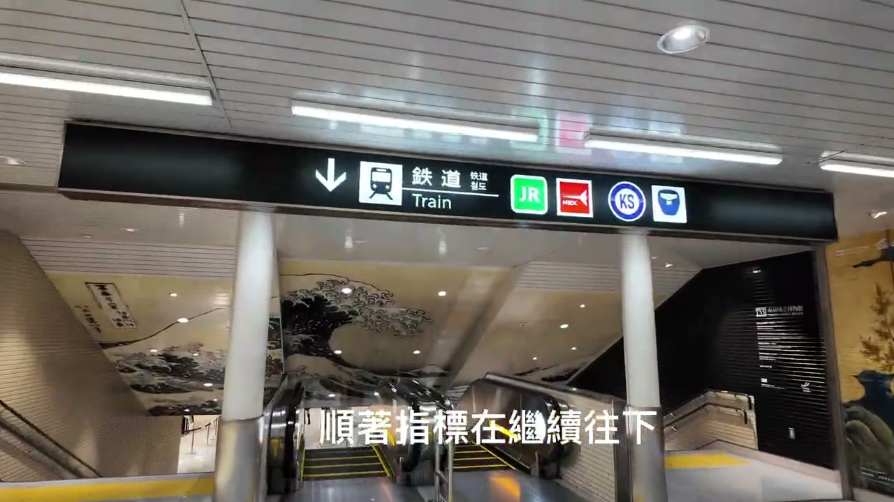
从一楼跟着“铁道 / Train / 鉄道”箭头乘坐扶梯往下；行李重可坐电梯。到达 B1F 后，脚下或附近会写 B1，中文就是地下一层。
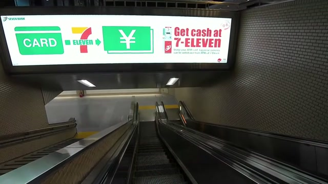
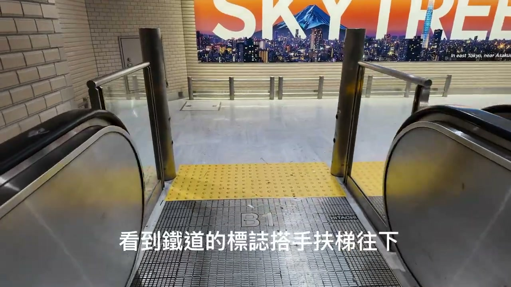
看到 京成线 / Keisei Line 就对了。不要走 JR Line。 京成线柜台和售票机就在这个方向。

蓝牌写着 京成线 成田空港站 / Keisei Line Narita Airport Terminal 1 Station，就是要进的车站。用 苹果手机/Suica/PASMO 刷卡，或先在售票机/柜台买票。

要搭的是 Access 特快 / アクセス特急 / Access Express。橙色牌旁边写 1，这是去日本桥的正确方向。

过闸后，先稍微向右，继续找橙色 Access 特快 / 1号 指示；不要去 4、5 号入口。

这张图写着 Skyliner，两侧是 4 号、5 号。它去日暮里/上野，不是去日本桥要走的线路。

全家便利店（FamilyMart）只是认路地标。过了全家便利店后向左转。店铺旁边和头顶仍以橙色 Access 特快 / Access Express / 1 指示为准。

补充确认：全家便利店在左侧；看见右前方橙色的 1 号牌和指示牌上的左箭头时，就准备向左转，不要继续直走。

看到下面这块橙色 1 号入口，就说明左转的时机到了；不要沿着全家旁边一直直走。

这里的方向牌和电子屏会写 アクセス特急，中文就是 Access 特快（英文：Access Express）。同时认准 1号站台。终点可能写羽田机场或西马込；继续跟橙色“アクセス特急 / 1”指示走。
只要看见日文“アクセス特急”，就是正确方向。


乘坐扶梯向下，到达站台。如果行李箱较重，可以乘坐电梯。站台、电子显示屏会显示 Access 特快 / Access Express。
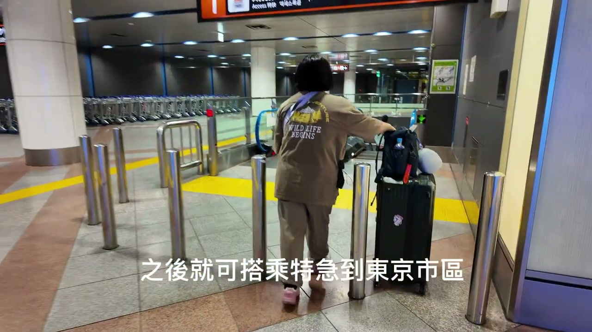
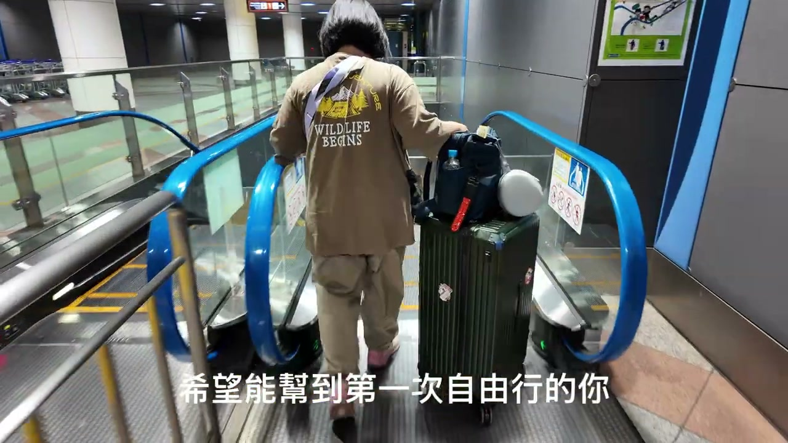
已经到站台了，先在安全线内等候。1 号站台是 Access 特快方向。列车到站时，看车门旁或站台电子屏：发车时间和列车终点（目的地）与第 9 步记下的一样，就是要坐的那一班。

只核对两项：发车时间、列车终点（目的地）。两项都与第 9 步记下的一样，就放心上车。

先让下车的人出来，再拉着行李上车。上车后坐稳或扶好，再等“日本橋”到站提示。

Access 特快 / Access Express 会与都营浅草线直通运行；通常不需要换车。车上或站内电子屏可能显示羽田机场、西马込等终点，只要停站列表包含日本橋即可。
下车站是 日本橋 / Nihombashi / A-13，不是“東日本橋 / Higashi-Nihombashi”。到站后直接出闸口，我在闸口外侧等你。
上车后可用 AI 再确认到站时间：把上车时间和电子屏显示的车次／终点发给 ChatGPT 或 Google AI，请它查询这班车预计几点到日本桥。手机时间只作提醒；听到或看到“日本橋 / Nihombashi / A-13”再下车。
按机场指示依次走：入境审查 → 取行李 → 海关。出了海关后，来到国际航班到达大厅，不要跟着人群走出航站楼。
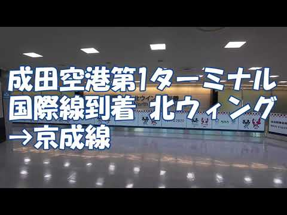
参考视频：北翼国际到达 → 京成线。画面用于帮助认路；现场标牌可能更新。
在到达大厅看头顶和墙上的方向牌。要找的是 铁道 / Train / 鉄道、京成线 / Keisei Line。跟着箭头下楼到 B1F，可以用电梯或电扶梯。
北翼、南翼到达大厅都可以到同一个 B1F 车站；不必为了“找南翼”横穿航站楼。
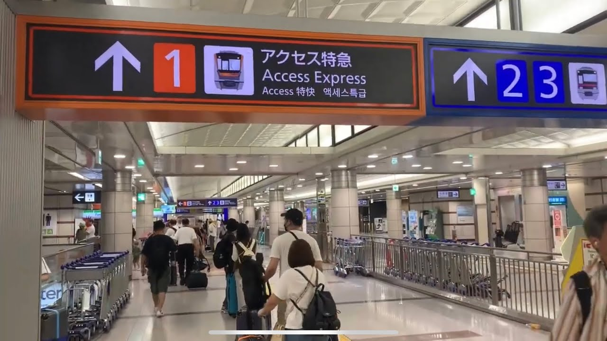
车站叫 成田空港駅 / Narita Airport Station，这是 T1 的车站。看到 京成線 / Keisei Line 后，在京成的闸机或售票机处刷 IC 卡（Suica/PASMO 等）或买票。
不要走到 JR Line，也不要走到“空港第2ビル / Terminal 2·3 Station”。
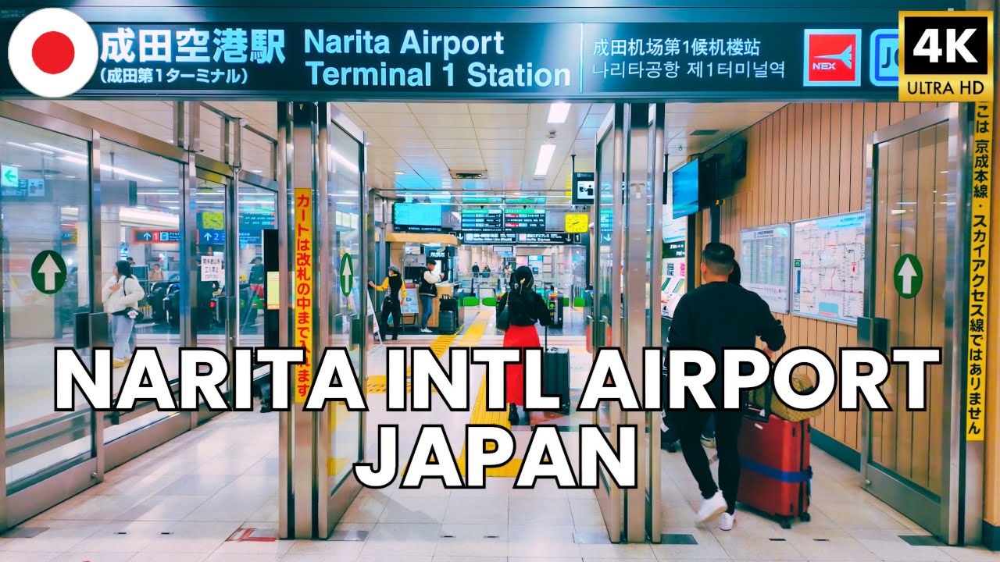
SkyAccess 是线路名；真正要找的车种是：
アクセス特急
Access Express
参考视频里的橙色指示牌指向 1。上车前仍要看当天电子屏，确认停靠 日本橋 / Nihombashi。
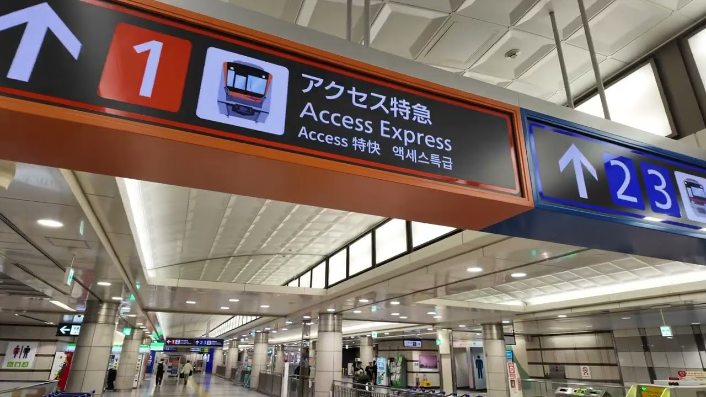
视频画面中“1”旁边的橙色栏就是 Access Express；现场站台编号以电子屏为准。
Access Express 会与都营浅草线直通运行；正常情况下到日本橋不用换车。车上或站内电子屏可能显示羽田机场、西马込等终点，只要停站列表包含日本橋即可。
下车站是 日本橋 / Nihombashi / A-13，不是“東日本橋 / Higashi-Nihombashi”。
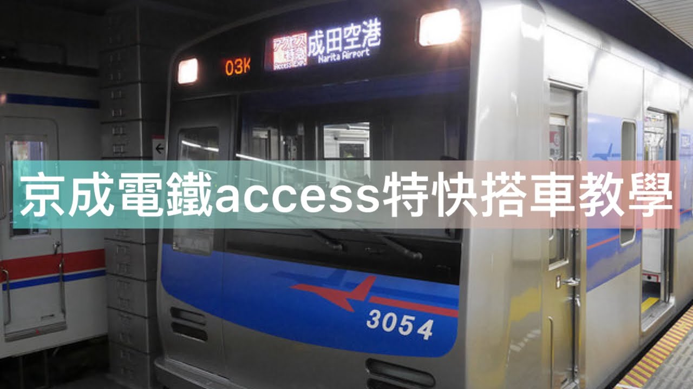
听到或看到 日本橋 / Nihombashi 后下车。先在站内看出口指示，再按酒店或家人发来的出口号走；如果不确定，就把下面这句话给站员看。
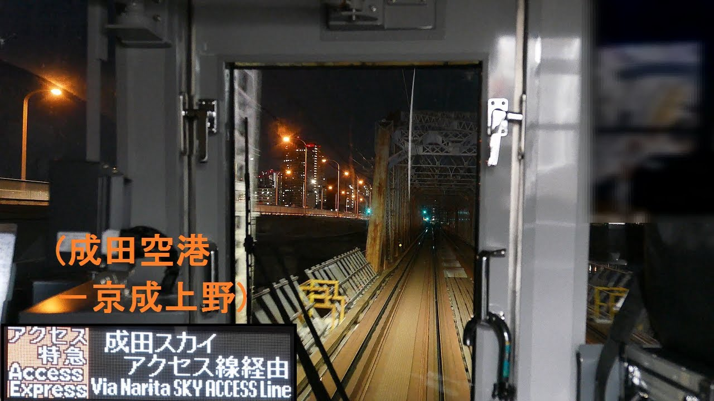
如果当天出口是南翼怎么办？
北翼、南翼的上层走法会略有不同，但目标相同：始终寻找写着“铁道 / Train”的指示牌，跟着它下到地下一层（B1F）京成线的 Access 特快。